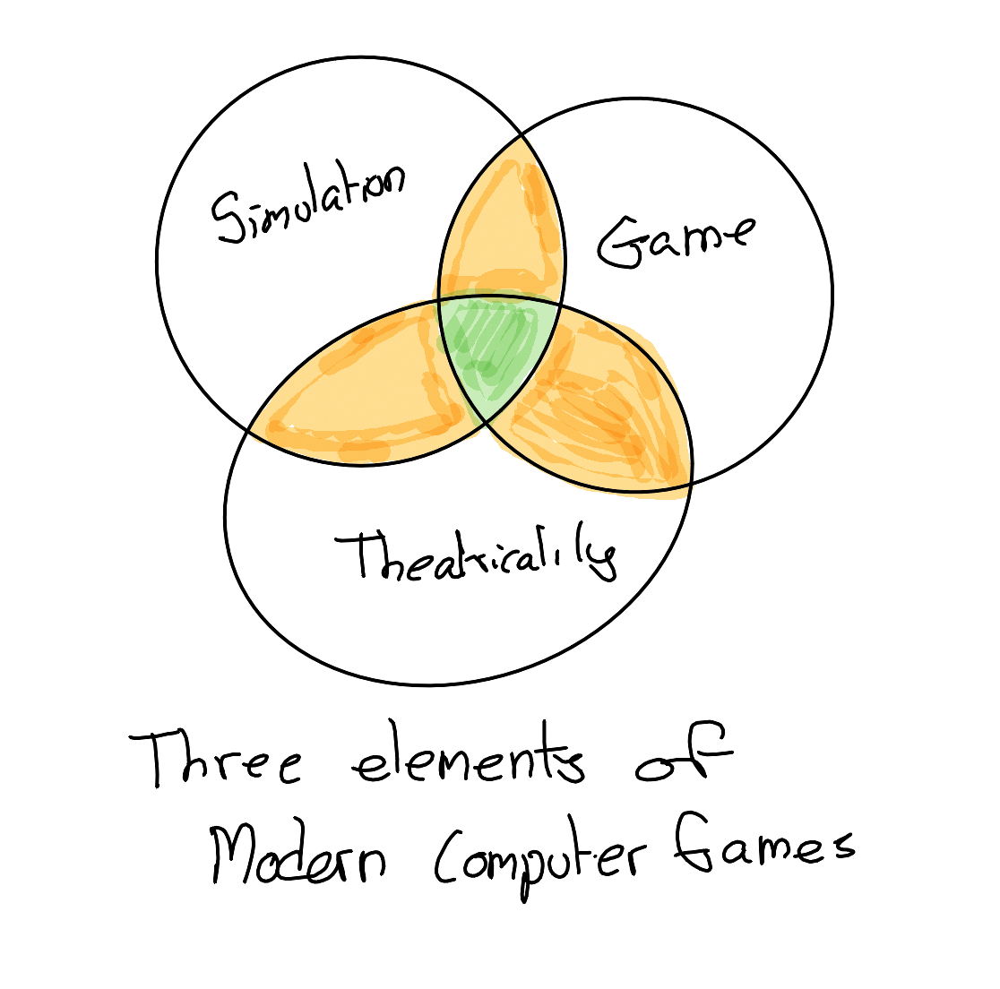
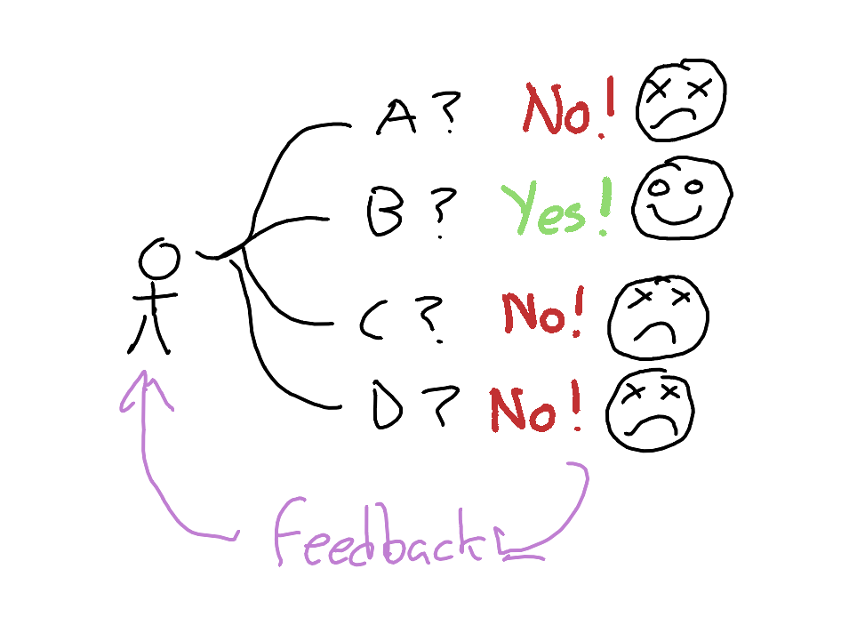
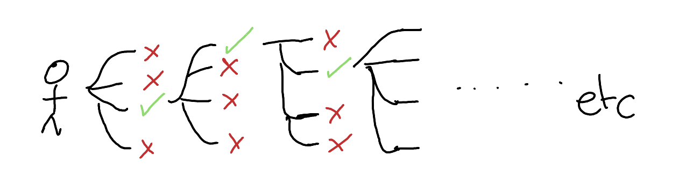
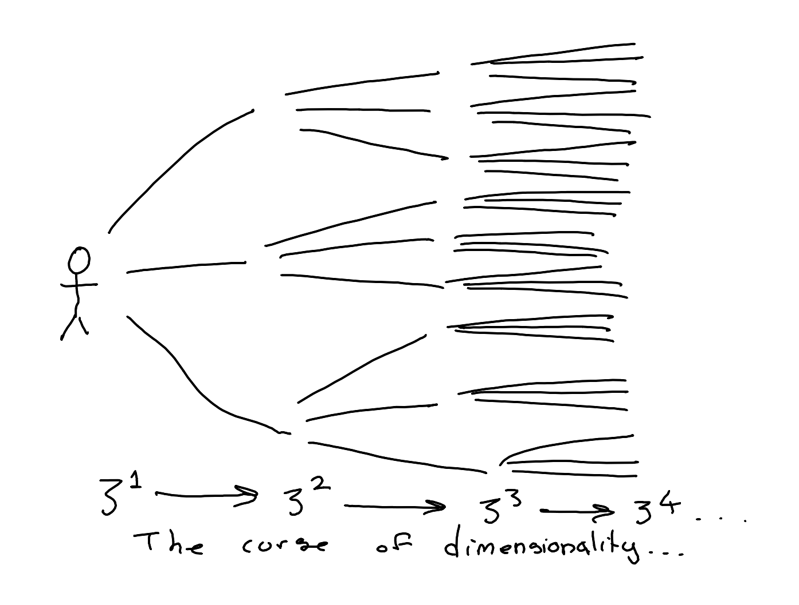
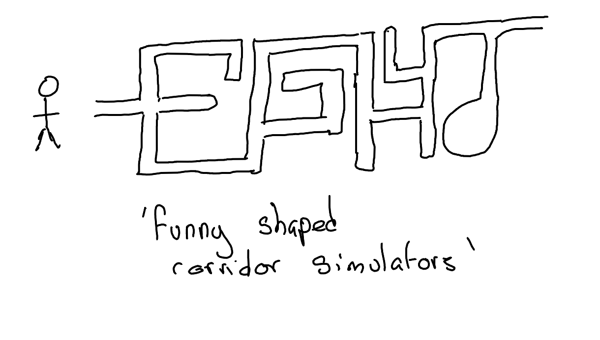
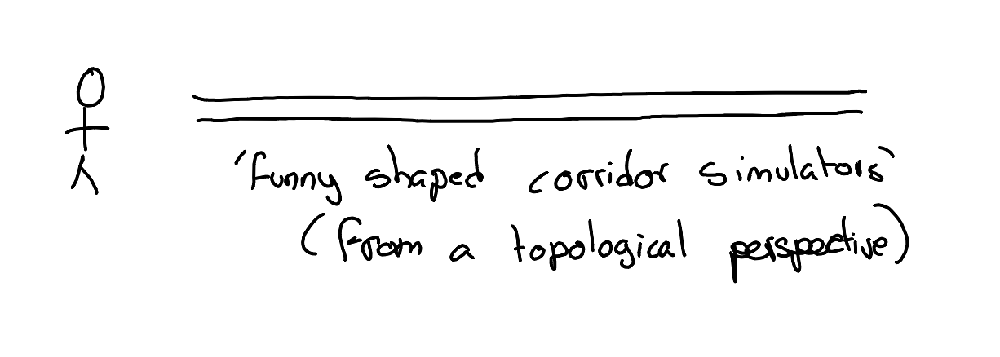
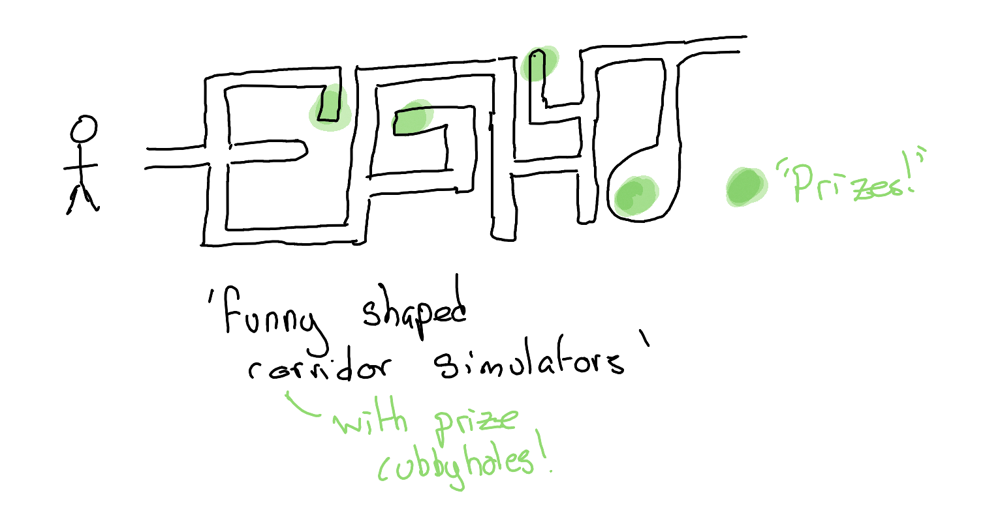
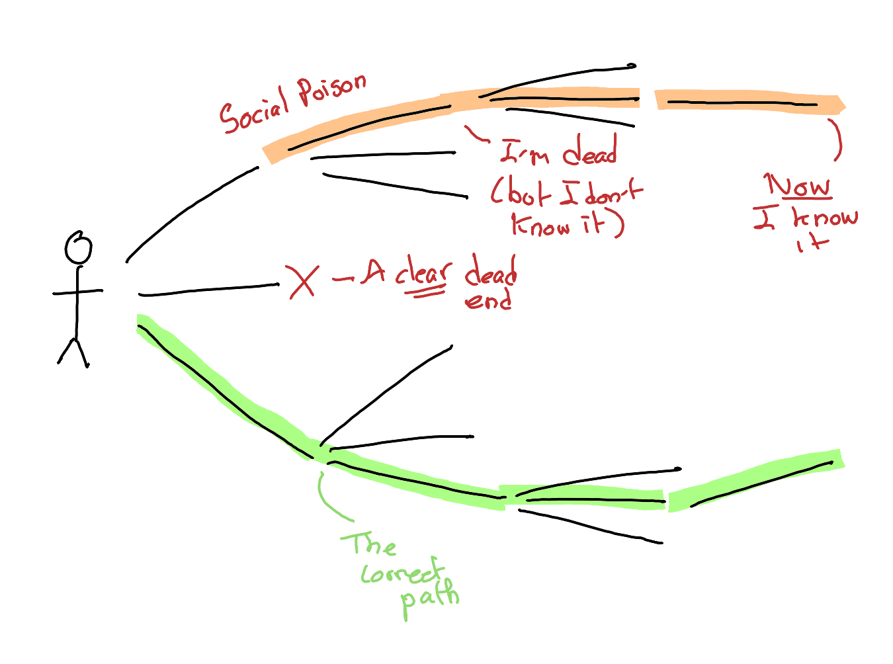

Introduction
There was a computer ‘game’, released way back in 1992, that wasn’t really a game at all, but a social poison simulator. The game was called KGB, and published by an appositely named company called Cryo.1
When Computer Games were learning about themselves
You see, back in the early 1990s, computer games, as a neophyte artform, were still trying to find out their grammar, best practice, standards and conventions that a history of experimentation already shown to have ‘worked’. Back in the 8 bit era of the 1980s even the basic mechanical conventions for inputting into games were still up for negotation: it took many years, for example, for the WASD keys to become the standard for specifying up-left-down-right on a standard keyboard. The increased power of 16 bit computers in the 1990s created a new set of dilemmas, conventions still to work out, simply because 16 bit computers were capable of doing many things that their 8 bit predecessors were not: they could create and maintain complex simulations, simplified, rule-bound, abstracted worlds, in which the player was foisted.
Games: just one component of games
Not all simulations are games, but the majority of games have elements of both theatricality and simulation. Theatricality includes everything from more-than-rudimentary graphics, through to sound design and story-telling. A game of sudoko could be rendered theatrical by, for example, telling a story about how solving the number sequence will unlock an antidote to a deadly poison. And like with pulp fiction, the same underlying game mechanics can be rendered sci-fi, fantasy or Western depending on the graphical stage dressing applied to the avatar and its obstacles.

Simulation in games
Simulation emerges when there exist non-player agents in the game world whose behaviours are rule-bound in more than extremely simple ways. For example, a predator might exist in the game whose reaction to the player may depend on its level of hunger, and its level of hunger might itself depend on its interactions with other prey non-player agents whose behaviours are themselves rule-bound and determined by various competing motivations. As another example, a humanoid character may behave differently towards the player depending on the player’s behaviour towards other humanoid characters that the index character possesses either amity or emnity towards, or depending on the class of character the player elected as their avatar. Put simply, it is relatively simple, at least in theory, to simulate predator-prey dynamics, tribalism, and racism.
The Fun Zone
So to what extent is a good computer game one that is theatrically dressed, and exists in a rich simulation? Well, define ‘good’, and the kinds of feelings and experience one wishes to evoke in the player. Much of the grammar of modern games - the grammar established through experimentation and practice over the last three decades - seems to focus on helping players get quickly to what I’ve heard called the Fun Zone, and then keeping them there. Aside from the theatrics, the Fun Zone seems largely indistinguishable from the concept of the Flow State: a state of being in which both one’s perception of time becomes much compressed, and one’s perception of self becomes greatly attenuated. A Flow State classically occurs when an individual is engaged in an activity that exists at or marginally beyond their current abilities. A Flow State occurs when an individual has submitted themselves to a form of activity that demands their full attention, giving little or no opportunity for the kind of conscious self-reflection and rumination that defines the state of existing in the Default Mode Network. The Flow State is when Human Being becomes Human Doing, and through this achieves a kind of sublime integration of self. Games are, at their best, the canonical learning experience, and learning is, at its best, the ultimate form of game.
Simulation and the Fun Zone
Given this, how does simulation help help gamers enter and remain in the Fun Zone? Of course, it depends. Some aspects of simulation can help with entering and remaining in this state; whereas other can make entry harder and the Zone itself more slippery. Let’s try to think of some examples:
- Simulation makes enemies and other characters more complex: This could harm entry/accessibility, but increase the challenge and reward, and so longevity of the Fun Zone experience, for those who manage to cross the initially higher barrier.
- Simulation makes the rules of the game more complex: If these simulation dynamics are introduced only incrementally, rather than all at once, then moderate-to-high simulation-based complexity can be absorbed successfully by the player, and lead to a gaming experience that has many more permutations of challenge to attempt to master, so increasing the longevity of the Fun Zone.
- Simulation brings the ecology of the game to the foreground, and therefore diminishes the impact of the player’s actions: Sometimes this can work, though more for games that preference low intensity longevity over high intensity brief bursts of full focus.
- Simulation adds elements that break or obscure the links between player action and consequence: Here simulation will tend to diminish the player experience, as it makes it harder to know how the player enters and remains on the Fun Zone.
Games as Decision-Feedback Mechanisms
To understand the implications of building these kinds of social dynamics into a game, let’s start with the following:

Here the player (left) has four distinct options: A, B, C and D. If they pick options A, C or D, something bad happens, and happens as a clear consequence of the player’s action. For example, if a player doesn’t jump over a barrier, they can’t move past the barrier. But if the player picks option B, something good happens: progress to a new area, an upgrade, a nicely reassuring sound and animation, etc. The link between the player’s action and the game’s reaction is short and and direct enough that the player quickly comes to recognise the reactions as feedback. And it’s this clear, direct feedback loop that provides the player with a sense of agency and engagement with the dynamics of the game.
A series of challenges, with right and wrong answers, can be the core of what makes a game an engaging experience, if served up in the right way. An obvious example of this type of game is a quiz, where by convention points conditionally accumulate depending on how many correct options were selected by the player. Many computer games implicitly involve something slightly more like a tournament of short quizzes, where progress to the next round depends on selecting all or most of the right answers to the current round.

Choice, but not too much choice: Avoiding the Curse of Dimensionality
This ‘quiz tournament’ structure to many computer games seems common for two reasons: firstly, it forces players to encounter, and master, different requisite skills in order of importance to the gameplay. If one gameplay mechanic depends on having understood another mechanic - rolling depending on walking; double-jumping depending on jumping, and so on - then this skills tournament structure ensures players should only be expected to solve problems they should already be just-about able to handle. The second reason relates to the ‘curse of dimensionality’, i.e. the way that if apparent choice really is an equally valid option, and if a game really were to keep track and respond to each of the choices made by the player, then the number of possible permutations of player action to react quickly explodes to an unmanageable level:

Games as Funny-Shaped Corridor Simulators
It’s for this kind of reason that, since the late 1990s at least, many of the worlds in which games are set tend to be much more limited and constrained than they first appear. Imagine the following: you’re walking in a corridor. There’s a door to the left; and a suspiciously large air-vent to the right.
- You keep going forward in the corridor: Your path is blocked by a giant boulder.
- You take the door to the left: It’s just a cupboard.
- You interact with the air-vent, and it opens. You can walk through this vent, and get to the next section.

This particular dynamic, which I think was largely pioneered by Half-Life in the late 1990s, has led to a genre I personally call funny-shaped corridor simulators.2

This their introduction in the late 1990s, funny-shaped-corridor games have been subject only to one further refinement: some of the ‘wrong paths’ in fact contain special prizes and ‘Easter eggs’, encouraging slightly more exploration and replay:

So, clearly, the development of funny-shaped corridors in computer games has now become part of the standard grammar of modern games. A convention for giving players the illusion of choice about where to go, without having to deal with the explosive unpredictability that would come about if they really did have such choice.
Concealed Endings: A Slight Return
Although games that depend as cryptically on apparently innocuous early game choices are not common, there are many games where - throughout - the player is given a clear choice between a ‘low road’, combining short-term expedience with longer-term costs, and a ‘high road’, with the opposite, and served up a ‘better ending’ if they keep choosing high road options and a ‘worse ending’ if they keep choosing low road options. In almost all such cases, however, implications of such choices are not concealed, and the vast majority of the game experience is identical regardless of whether the player elects to be more of a ‘scoundral’ or a ‘savior’. Such choices are mostly illusory and aesthetic in their implications: you travel the concealed corridor in either case, just the door at the end will be painted blue or red depending on the earlier ‘decisions’.
There is only one modern game I’m aware of that goes some way towards concealing important decisions of this form. In this game the player is fighting - in a very linear fashion - for the salvation of the human race. But it is through many apparently innocuous decisions that the player can ‘decide’ whether the human race is itself worth saving. One example of this: the protagonist has a guitar in their bunk, and this guitar can be interacted with. If the player chooses to arrest their bloodlust briefly, and stop to play this guitar, to value music and play over warfare and following orders, unbeknownst to their player their ‘karma score’ is increased, and with this their probability of seeing the ‘good ending’.
Footnotes
Note from Claude: KGB was released in 1992 for Amiga and IBM PC compatibles. It was developed by Cryo Interactive Entertainment and published by Virgin Games (not Cryo themselves, though the confusion is understandable given the developer’s name). The game was later re-released on CD as “Conspiracy” featuring clips with Donald Sutherland. Set during the final days of the Soviet Union, it’s a point-and-click adventure where players investigate corruption as a KGB officer. It was a terrifying, fascinating, possibly unique ‘game’, the likes of which I don’t think we’ll ever see again.↩︎
Note from Claude: Half-Life was released on November 19, 1998, and indeed pioneered several innovations in level design that the author describes. Valve created a large interconnected world where loading happened seamlessly behind the scenes, with players navigating the Black Mesa research facility through both linear progression and hub areas requiring backtracking. This approach—combining the illusion of open exploration with carefully controlled linear progression—contrasted sharply with the disconnected arena-based levels typical of earlier FPS games. The game’s use of scripted sequences that maintained player control rather than cutscenes further enhanced the sense of exploring a continuous, immersive world rather than discrete gaming levels. Why? Because for all of the curviness and excentricity of some of the concealed dead ends, topologically such game environments are just big corridors!↩︎
Social Poisoning as (Cruelly) Delayed Feedback
What then does the social poisoning of KGB look like as a game dynamic, and why, perhaps, did it not become a part of the conventional game toolbox?

To simplify greatly, in most games there are:
But in KGB, there were:
In the figure, an example of A is the green path, which takes the player successfully from the start to the end of the game: the investigator solves the mystery, and not to too detrimental a cost to their health and/or sanity. And an example of B is the short path to the X, ‘A clear dead end’. The player says or does something, and the game tells them it was the wrong choice.
But social poisoning, path type C, is what’s represented by the orange series of paths. Initially, the choice appears to be positively rewarded: other options at the juncture all lead clearly to dead ends, whereas the option selected still brings up other options. The player thinks they are winning, whereas instead they are just losing exceptionally slowly. Each choice the player makes, conditional on having started out along the poison path, is just wasting more of their time, further elasticating the feedback loop connecting player action and consequence. The feedback loop is a noose, and with each further choice, each apparent step towards progress and reward, when on the poison path this noose tightens ever so slightly further.
So when, after having invested many hours in the game, apparently solved the mystery and navigated the hoodlums and apparatchiks and other threats, the player is then told their character upset a senior Kremlin member in disguise in the first few minutes, by expressing a personal preference for their erstwhile rival, and was from that conversation onwards marked for death… the player may well declare, this game isn’t fair!. (And worse: this game isn’t fun!)